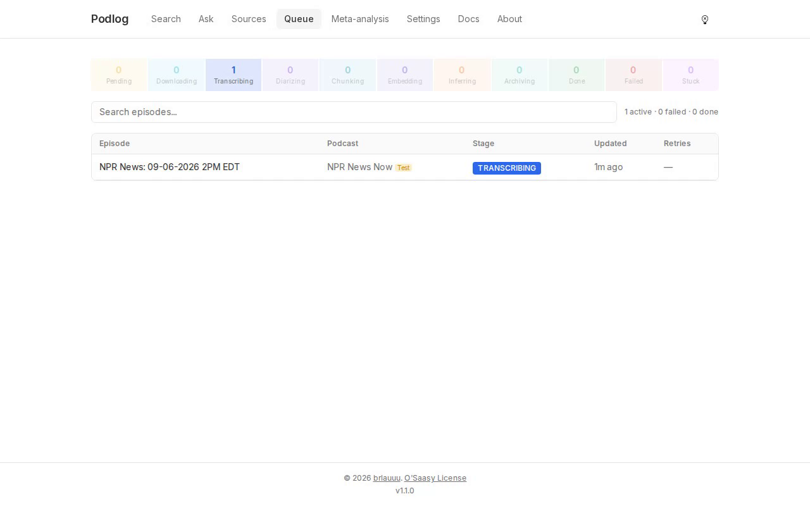
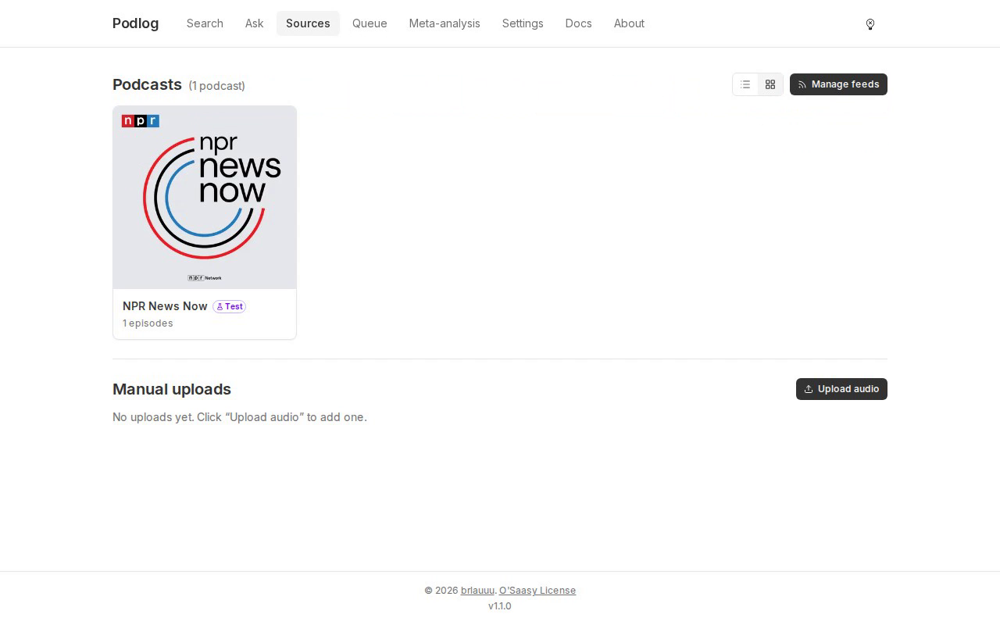
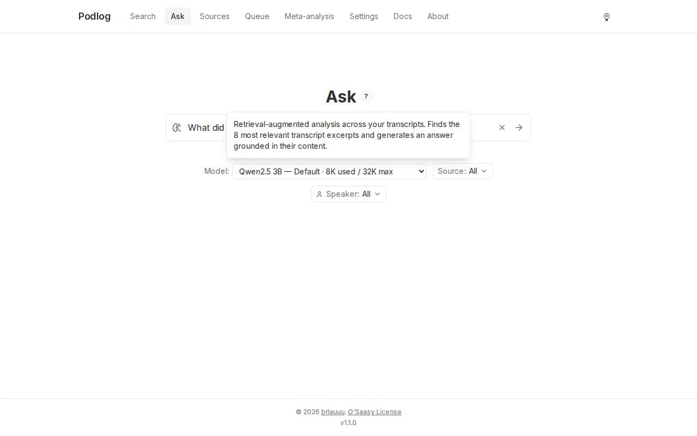

Self-hosted · runs on your machine
Every podcast you follow, transcribed and searchable.
Podlog downloads the episodes, transcribes them, names the speakers, and gives you full-text search and a question box over all of it. Nothing leaves your machine unless you say so.
- Downloadfrom the RSS feed
- TranscribeWhisperX, large-v3-turbo
- Diarizepyannote, who spoke when
- Chunkspeaker turns
- Embedvectors for Ask
- Inferspeaker names
- Archiveaudio compressed
What you get
- Search across every transcript, with timestamps that jump the player to the moment.
- Speakers labelled and named, with a merge and rename UI when the guess is wrong.
- Ask AI: a question answered from your own transcripts, with the excerpts it used.
- A Telegram bot for the phone:
/search,/ask,/transcript,/addfeed. - Notifications when an episode is done or fails, nightly backups, a queue you can watch.
What it needs
- A Linux box or a Mac with Docker and Compose v2. Published images are amd64; other architectures build from source.
- A free HuggingFace token, and the pyannote licence accepted with it. Podlog checks both at startup and says so if either is missing.
- Disk for audio and models: about 3 GB of speech models, then your episodes.
- Optional: a Fireworks key for remote transcription and Ask, a pyannote.ai key for cloud diarization.
What it does not do
- No cloud, no account, no telemetry. The only outbound calls are the ones you configure.
- No update nagging: the version check is off until you turn it on.
- No login. Podlog is meant for one trusted machine on one trusted network; the security model says exactly what that means before you open it to your Wi-Fi.
What it looks like
Screens from the fresh install in the recording above, with one public news podcast added, so nothing here is anyone's private listening.



Two things worth seeing before you commit
Recorded against a throwaway install, scripted so they are redone whenever a release changes either flow. Both silent; both a few minutes.
A fresh install
Clone, two settings, one command, the model download, the first feed, a search and a question. 3 min 52 s.
Applying an update
make update from 1.0.1 to 1.1.0: it drains the queue, takes a backup and refuses to continue without one, then moves, pulls and restarts. 1 min 47 s.
Install
Four commands on a machine with Docker. The guide has the prerequisites and the security model; the first-run page has what to expect in the first fifteen minutes.
Honest about speed: on an 8-core CPU a 30-minute episode takes about 45 minutes to process locally. Fireworks brings that down to minutes if you are willing to send audio out.
# 1. Clone, at the newest release git clone https://github.com/brlauuu/podlog.git cd podlog git checkout "$(git tag -l 'v*' --sort=-v:refname | head -1)" # 2. Two required settings cp .env.example .env nano .env # POSTGRES_PASSWORD and HF_TOKEN # 3. Start from the published images, no build make up-release # 4. The local model Ask AI uses, once docker compose exec ollama ollama pull qwen2.5:3b